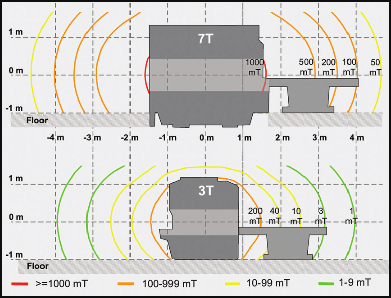

The MRI's Magnetic Field
MRI machines use extremely powerful magnetic fields, typically ranging from 1.5 to 3 Tesla, with some research machines reaching up to 7 Tesla. To put this in perspective, the Earth's magnetic field is about 0.00005 Tesla.

Key Characteristics of MRI Magnetic Fields
- Always On: The main magnetic field is always active, even when the MRI is not scanning.
- Invisible: Magnetic fields cannot be seen, smelled, or felt, making them potentially dangerous if proper precautions are not taken.
- Far-Reaching: The magnetic field extends beyond the bore of the MRI machine, creating a "safety zone" around the equipment.
- Powerful Attraction: The magnetic field can attract ferromagnetic objects with incredible force, potentially turning them into dangerous projectiles.
Safety Implications
- Projectile Effect: Metal objects can be pulled towards the MRI machine with great force, potentially causing injury or damage.
- Implant Interference: The magnetic field can interfere with the function of certain medical implants, such as pacemakers.
- Induced Currents: Moving through the magnetic field can induce electrical currents in the body or in implanted devices.
- Data Wiping: Strong magnetic fields can erase data from magnetic strips on credit cards or other devices.